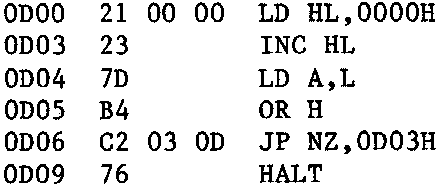

INMC 80 News |
February–April 1981 · Issue 3 |
| Page 36 of 55 |
|---|
it again when incrementing the HL register. Still zilch!!! Still not a twitch out of the F register. It seemed that these flag things had a mind of their own, and only worked when they wanted to. The truth was, of course, that I was wrong, INCrement instructions are not truly arithmetic and the affect on the flags is somewhat variable depending on the conditions. As a general rule, all flag changes except the Z flag (associated with 8 bit INCs only) should be ignored.
Back to the story. Boring isn’t it, or perhaps your ears are burning. Having decided that the flags have a will of their own, I had to discover a better way of testing whether the HL register had reached zero. I’ll put you out of your misery, and at the same time save me a modicum of embarrassment, by telling you how it may be done rather than the rather ham fisted way I actually did it. The ‘logical OR’ instruction is the trick. Don’t expect me to explain ‘logical’ operations, read it up in a book like Martin Healey’s ‘Minicomputers and Microprocessors’ (a bit pricey, but ideal fodder for frustrated electronics engineers. What’s more, it’s British, and part of the recommended reading for the Open University Computer Course). The thing about an ‘OR’ instruction is that when one register is ‘ORed’ with another, the Z flag will be set when, and only when, both registers are zero. So, bearing in mind that the HL register pair is in fact two registers, the ideal instruction in this case would have been OR H with L, but it doesn’t exist. Don’t forget that aritmetic and logical operations can only be performed with (or against) the A register. So the thing to do is to copy one register to the A register, and then OR the other register with A. So now I can guarantee to set the Z flag when both H and L are zero.
Better start learning about conditional jumps. Well these are the same as the unconditional jump mentioned earlier, but they only happen when the condition is true. So if I want my little delay subroutine to loop round until HL is zero, and I’m ORing H with L (via the A register) to set the flags, then testing the 2 flag to determine this, the appropriate jump is a ‘Jump Not Zero,nn’, the mnemonic for which is JP NZ,nn. All set, I wrote an experimental program and tried out the ‘B’ Breakpoint command at the same time. My program looked like this:
and executed it at 0D00H. After about one second, the HALT LED on the Nascom came on, so it looked as if it had worked. But how could I be sure it was doing exactly what I wanted. I had already found out that when a program “crashed” it tended to go away, think to itself for a few seconds, and then the HALT LED would light. I suppose I could single step it, but pushing the button half a million times didn’t sound like my idea of a fun evening, so what else? Maybe, step the first few times round the loop to see if the registers changed as I expected, and then set a breakpoint at the end where it would hit the HALT instruction, and see if the registers made sense. Ok?
S 0D00
| 1000 0D03 4800 0000 1000 0000 | we’ve just loaded HL with 0000 and PC is pointing to the INC HL |
| 1000 0D04 4800 0001 1000 0000 | HL has just been INCed by 1 and PC is pointing to the LD A,L |
| 1000 0D05 0100 0001 1000 0000 | L has just been copied to A and PC points to the OR H |
| 1000 0D06 0100 0001 1000 0000 | H has just been ORed with A. No flags changed notice |
| 1000 0D03 0100 0001 1000 0000 | As there was no zero, the jump was affected and PC now points to INC HL again |
looking good, so put a breakpoint at 0D09H to stop it when if ‘falls through” the jump
B 0D09
and now tell it to execute from where it is
E
about 1 second later, the following appeared
| 1000 0D09 0044 0000 1000 0000 | The F register has the Z and P/V flags set and the HL pair has 0000 in it |
| Page 36 of 55 |
|---|